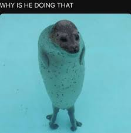

YOU'RE WELCOME! | ЛАСКАВО ПРОСИМО!
Про тюленів
| назва | тюлень|seal |
|---|---|
| За способом харчування | хижак |
| Їжа | риба |
| люди бачать їх як | милі тварини |
Фото і гівки тюленчиків


Про Тюленів
Тюлені – це морські ссавці з ряду хижих, які входять до групи ластоногих, Вони поділяються на дві родини: вухастих,та справжніх До ключових особливостей тюленів належать витягнуте тіло, кінцівки, що перетворилися на ласти, та значний прошарок підшкірного жиру. Вухаті тюлені, ймовірно, походять від примітивних ведмедеподібних, справжні — імовірно від примітивних куницевих. У справжніх тюленів немає вушних раковин.
Цікаві факти про тюленів та їх особливості
- 💧Ссавці, що живуть у воді Тюлені — це морські ссавці, тобто вони народжують дитинчат, яких вигодовують молоком, дихають легенями та мають хутро.
- 🌅Відмінно плавають, але незграбні на суші Вода — їхнє природне середовище. Вони використовують свої передні та задні плавці для плавання, але на суші рухаються повільно, волочачи тіло.
- 😮💨Можуть затримувати дихання до 30 хвилин Деякі види тюленів можуть пірнати на глибину понад 500 метрів і затримувати дихання до півгодини, уповільнюючи серцебиття під час занурення.
Друзі тюленчиків
Тюлені і люди
Тюлені і люди мають гарні стосунки тому що тюлені не нападають на людей а люди не ставляться звірськи до тюленів це робе їх "друзями"

Дитинчата тюленів
Тюлені при необхідності можуть гратися з дитинчатами інших тюленів поки їх немає рядом з дитинчатом

Тюлені і дельфіни
Тюлені і дельфіни мають гарні стосунки що дає їм змогу плавати та полювати на рибу разом